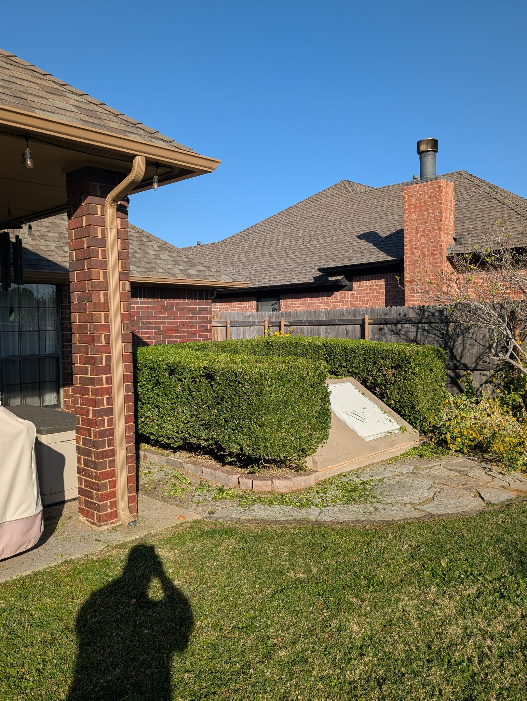
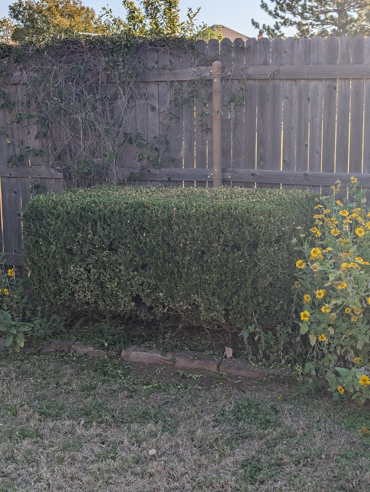
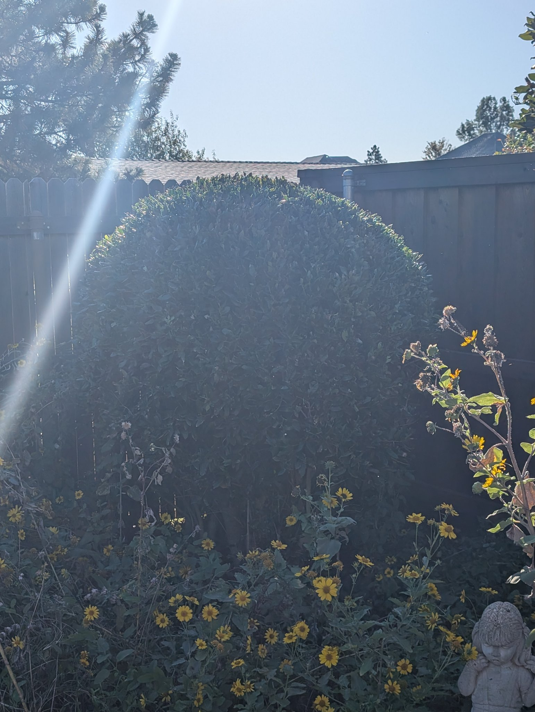
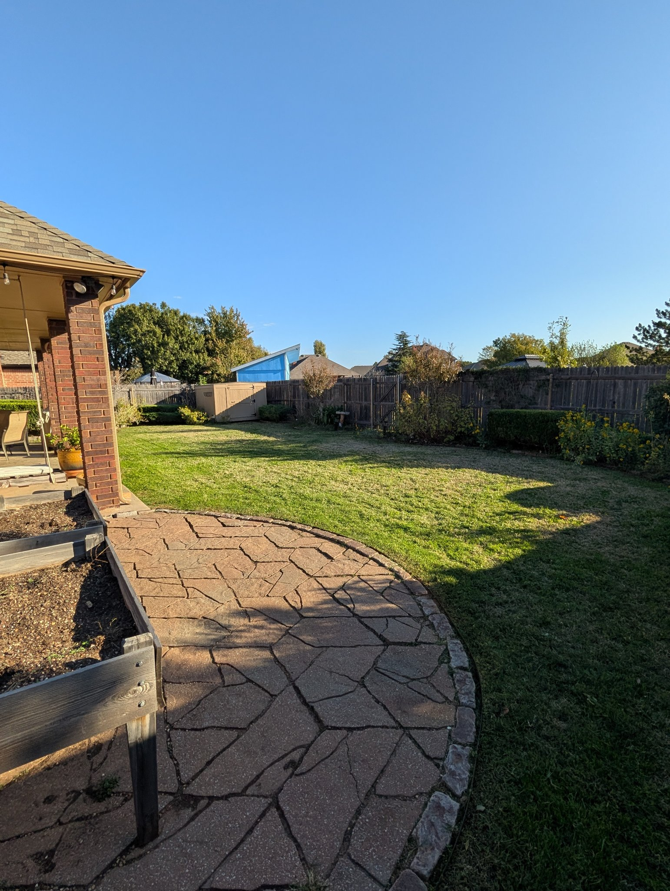
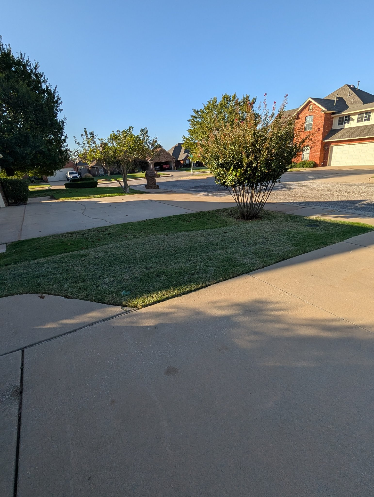
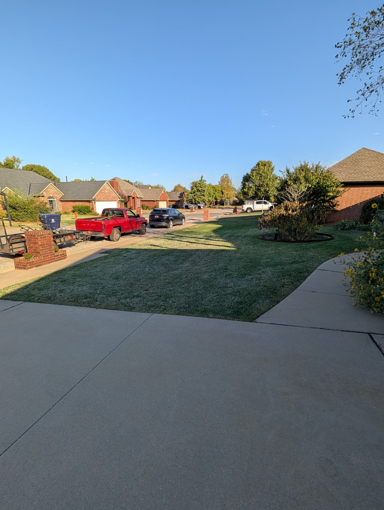
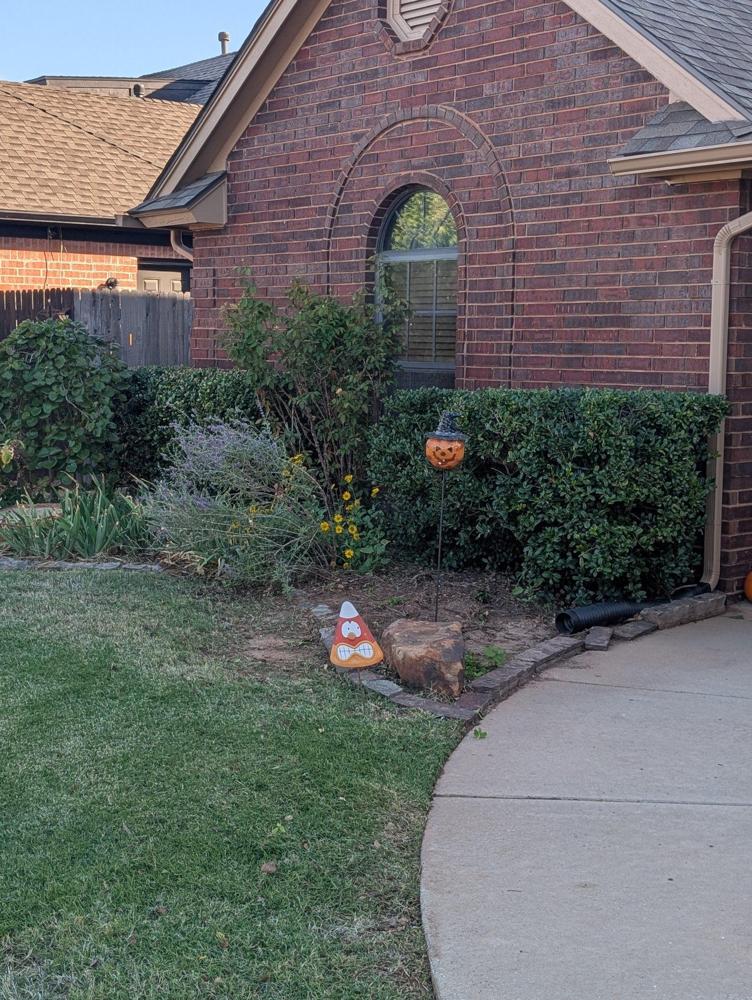

← Back to Donovan's instructions
Wednesday, Oct 28, 2026 · Crew: 2 men · On site 9:11 AM – 9:53 AM · Time on site 0:42:00 · Man-hours 1:24:00
Mowing service · Trim all holly and boxwood shrubs, front & back.






